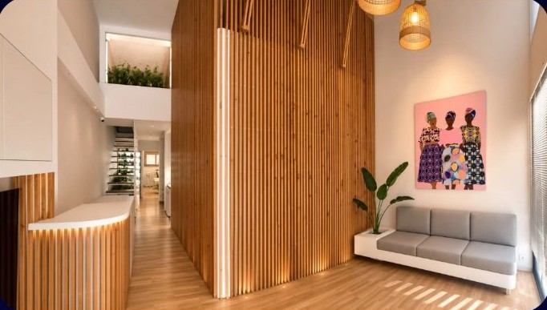

Η Έλενα
Έλενα Σπυριδάκη
Αισθητικός Κοσμητολόγος & Διαιτολόγος
Η διαδρομή της ξεκίνησε στην Αγγλία, με σπουδές αισθητικής στο City College του Manchester και παράλληλη εκπαίδευση στη φυσική αγωγή στο University of Salford.
Ολοκλήρωσε τις σπουδές της ως αισθητικός κοσμητολόγος στο ΤΕΙ Αθήνας, το σημερινό Πανεπιστήμιο Δυτικής Αττικής (ΠΑΔΑ). Στη συνέχεια σπούδασε διαιτολογία στο ΤΕΙ Κρήτης, το σημερινό Ελληνικό Μεσογειακό Πανεπιστήμιο (ΕΛΜΕΠΑ), από το 2004 έως το 2008.
Εργάστηκε ως αισθητικός στο Manchester το 1998 και στην Αθήνα από το 2001 έως το 2003, αποκτώντας εμπειρία σε διαφορετικά περιβάλλοντα και σχολές σκέψης.
Παράλληλα με την κλινική πράξη, δίδαξε στο ΕΠΑΛ Νεάπολης (2003–2004) και στο ΙΕΚ Σητείας (2007–2008 και 2013–2014), μεταφέροντας την εμπειρία της σε νέους επαγγελματίες του χώρου.
Από το 2008 διατηρεί το δικό της ινστιτούτο αισθητικής στη Σητεία. Ο διπλός τίτλος, αισθητικός και διαιτολόγος, της επιτρέπει να αντιμετωπίζει κάθε περίπτωση συνολικά: η θεραπεία και η διατροφή σχεδιάζονται μαζί, με κοινό στόχο και ρεαλιστικές προσδοκίες.
Η Φιλοσοφία μας
Elegance is the only beauty that never fades. Είσαι ό,τι τρως. Η ομορφιά χτίζεται και από μέσα.Έλενα Σπυριδάκη · Beauty Lab, Σητεία